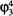

A. Transgressing the Boundaries:Toward a Transformative Hermeneutics of Quantum Gravity*
Transgressing disciplinary boundaries … [is] a subversive undertaking since it is likely to violate the sanctuaries of accepted ways of perceiving. Among the most fortified boundaries have been those between the natural sciences and the humanities.
—Valerie Greenberg, Transgressive Readings (1990, p. 1)
The struggle for the transformation of ideology into critical science … proceeds on the foundation that the critique of all presuppositions of science and ideology must be the only absolute principle of science.
—Stanley Aronowitz, Science as Power (1988b, p. 339)
There are many natural scientists, and especially physicists, who continue to reject the notion that the disciplines concerned with social and cultural criticism can have anything to contribute, except perhaps peripherally, to their research. Still less are they receptive to the idea that the very foundations of their worldview must be revised or rebuilt in the light of such criticism. Rather, they cling to the dogma imposed by the long post-Enlightenment hegemony over the Western intellectual outlook, which can be summarized briefly as follows: that there exists an external world, whose properties are independent of any individual human being and indeed of humanity as a whole; that these properties are encoded in “eternal” physical laws; and that human beings can obtain reliable, albeit imperfect and tentative, knowledge of these laws by hewing to the “objective” procedures and epistemological strictures prescribed by the (so-called) scientific method.
But deep conceptual shifts within twentieth-century science have undermined this Cartesian-Newtonian metaphysics1; revisionist studies in the history and philosophy of science have cast further doubt on its credibility2; and, most recently, feminist and poststructuralist critiques have demystified the substantive content of mainstream Western scientific practice, revealing the ideology of domination concealed behind the façade of “objectivity”.3 It has thus become increasingly apparent that physical “reality”, no less than social “reality”, is at bottom a social and linguistic construct; that scientific “knowledge”, far from being objective, reflects and encodes the dominant ideologies and power relations of the culture that produced it; that the truth claims of science are inherently theory-laden and self-referential; and consequently, that the discourse of the scientific community, for all its undeniable value, cannot assert a privileged epistemological status with respect to counter-hegemonic narratives emanating from dissident or marginalized communities. These themes can be traced, despite some differences of emphasis, in Aronowitz’s analysis of the cultural fabric that produced quantum mechanics4; in Ross’ discussion of oppositional discourses in post-quantum science5; in Irigaray’s and Hayles’ exegeses of gender encoding in fluid mechanics6; and in Harding’s comprehensive critique of the gender ideology underlying the natural sciences in general and physics in particular.7
Here my aim is to carry these deep analyses one step farther, by taking account of recent developments in quantum gravity: the emerging branch of physics in which Heisenberg’s quantum mechanics and Einstein’s general relativity are at once synthesized and superseded. In quantum gravity, as we shall see, the space-time manifold ceases to exist as an objective physical reality; geometry becomes relational and contextual; and the foundational conceptual categories of prior science—among them, existence itself—become problematized and relativized. This conceptual revolution, I will argue, has profound implications for the content of a future postmodern and liberatory science.
My approach will be as follows: First I will review very briefly some of the philosophical and ideological issues raised by quantum mechanics and by classical general relativity. Next I will sketch the outlines of the emerging theory of quantum gravity, and discuss some of the conceptual issues it raises. Finally, I will comment on the cultural and political implications of these scientific developments. It should be emphasized that this article is of necessity tentative and preliminary; I do not pretend to answer all of the questions that I raise. My aim is, rather, to draw the attention of readers to these important developments in physical science, and to sketch as best I can their philosophical and political implications. I have endeavored here to keep mathematics to a bare minimum; but I have taken care to provide references where interested readers can find all requisite details.
Quantum Mechanics: Uncertainty, Complementarity, Discontinuity, and Interconnectedness
It is not my intention to enter here into the extensive debate on the conceptual foundations of quantum mechanics.8 Suffice it to say that anyone who has seriously studied the equations of quantum mechanics will assent to Heisenberg’s measured (pardon the pun) summary of his celebrated uncertainty principle:
We can no longer speak of the behaviour of the particle independently of the process of observation. As a final consequence, the natural laws formulated mathematically in quantum theory no longer deal with the elementary particles themselves but with our knowledge of them. Nor is it any longer possible to ask whether or not these particles exist in space and time objectively …
When we speak of the picture of nature in the exact science of our age, we do not mean a picture of nature so much as a picture of our relationships with nature.… Science no longer confronts nature as an objective observer, but sees itself as an actor in this interplay between man [sic] and nature. The scientific method of analysing, explaining and classifying has become conscious of its limitations, which arise out of the fact that by its intervention science alters and refashions the object of investigation. In other words, method and object can no longer be separated.9,10
Along the same lines, Niels Bohr wrote:
An independent reality in the ordinary physical sense can … neither be ascribed to the phenomena nor to the agencies of observation.11
Stanley Aronowitz has convincingly traced this worldview to the crisis of liberal hegemony in Central Europe in the years prior and subsequent to World War I.12,13
A second important aspect of quantum mechanics is its principle of complementarity or dialecticism. Is light a particle or a wave? Complementarity “is the realization that particle and wave behavior are mutually exclusive, yet that both are necessary for a complete description of all phenomena.”14 More generally, notes Heisenberg,
the different intuitive pictures which we use to describe atomic systems, although fully adequate for given experiments, are nevertheless mutually exclusive. Thus, for instance, the Bohr atom can be described as a small-scale planetary system, having a central atomic nucleus about which the external electrons revolve. For other experiments, however, it might be more convenient to imagine that the atomic nucleus is surrounded by a system of stationary waves whose frequency is characteristic of the radiation emanating from the atom. Finally, we can consider the atom chemically.… Each picture is legitimate when used in the right place, but the different pictures are contradictory and therefore we call them mutually complementary.15
And once again Bohr:
A complete elucidation of one and the same object may require diverse points of view which defy a unique description. Indeed, strictly speaking, the conscious analysis of any concept stands in a relation of exclusion to its immediate application.16
This foreshadowing of postmodernist epistemology is by no means coincidental. The profound connections between complementarity and deconstruction have recently been elucidated by Froula17 and Honner18, and, in great depth, by Plotnitsky.19,20,21
A third aspect of quantum physics is discontinuity or rupture: as Bohr explained,
[the] essence [of the quantum theory] may be expressed in the so-called quantum postulate, which attributes to any atomic process an essential discontinuity, or rather individuality, completely foreign to the classical theories and symbolized by Planck’s quantum of action.22
A half-century later, the expression “quantum leap” has so entered our everyday vocabulary that we are likely to use it without any consciousness of its origins in physical theory.
Finally, Bell’s theorem23 and its recent generalizations24 show that an act of observation here and now can affect not only the object being observed—as Heisenberg told us—but also an object arbitrarily far away (say, on Andromeda galaxy). This phenomenon—which Einstein termed “spooky”—imposes a radical reevaluation of the traditional mechanistic concepts of space, object, and causality25, and suggests an alternative worldview in which the universe is characterized by interconnectedness and (w)holism: what physicist David Bohm has called “implicate order”.26 New Age interpretations of these insights from quantum physics have often gone overboard in unwarranted speculation, but the general soundness of the argument is undeniable.27 In Bohr’s words, “Planck’s discovery of the elementary quantum of action … revealed a feature of wholeness inherent in atomic physics, going far beyond the ancient idea of the limited divisibility of matter.”28
Hermeneutics of Classical General Relativity
In the Newtonian mechanistic worldview, space and time are distinct and absolute.29 In Einstein’s special theory of relativity (1905), the distinction between space and time dissolves: there is only a new unity, four-dimensional space-time, and the observer’s perception of “space” and “time” depends on her state of motion.30 In Hermann Minkowski’s famous words (1908):
Henceforth space by itself, and time by itself, are doomed to fade away into mere shadows, and only a kind of union of the two will preserve an independent reality.31
Nevertheless, the underlying geometry of Minkowskian space-time remains absolute.32
It is in Einstein’s general theory of relativity (1915) that the radical conceptual break occurs: the space-time geometry becomes contingent and dynamical, encoding in itself the gravitational field. Mathematically, Einstein breaks with the tradition dating back to Euclid (and which is inflicted on high-school students even today!), and employs instead the non-Euclidean geometry developed by Riemann. Einstein’s equations are highly nonlinear, which is why traditionally-trained mathematicians find them so difficult to solve.33 Newton’s gravitational theory corresponds to the crude (and conceptually misleading) truncation of Einstein’s equations in which the nonlinearity is simply ignored. Einstein’s general relativity therefore subsumes all the putative successes of Newton’s theory, while going beyond Newton to predict radically new phenomena that arise directly from the nonlinearity: the bending of starlight by the sun, the precession of the perihelion of Mercury, and the gravitational collapse of stars into black holes.
General relativity is so weird that some of its consequences—deduced by impeccable mathematics, and increasingly confirmed by astrophysical observation—read like science fiction. Black holes are by now well known, and wormholes are beginning to make the charts. Perhaps less familiar is Gödel’s construction of an Einstein space-time admitting closed timelike curves: that is, a universe in which it is possible to travel into one’s own past!34
Thus, general relativity forces upon us radically new and counterintuitive notions of space, time, and causality35,36,37,38; so it is not surprising that it has had a profound impact not only on the natural sciences but also on philosophy, literary criticism, and the human sciences. For example, in a celebrated symposium three decades ago on Les Langages Critiques et les Sciences de l’Homme, Jean Hyppolite raised an incisive question about Jacques Derrida’s theory of structure and sign in scientific discourse:
When I take, for example, the structure of certain algebraic constructions [ensembles], where is the center? Is the center the knowledge of general rules which, after a fashion, allow us to understand the interplay of the elements? Or is the center certain elements which enjoy a particular privilege within the ensemble?… With Einstein, for example, we see the end of a kind of privilege of empiric evidence. And in that connection we see a constant appear, a constant which is a combination of space-time, which does not belong to any of the experimenters who live the experience, but which, in a way, dominates the whole construct; and this notion of the constant—is this the center?39
Derrida’s perceptive reply went to the heart of classical general relativity:
The Einsteinian constant is not a constant, is not a center. It is the very concept of variability—it is, finally, the concept of the game. In other words, it is not the concept of something—of a center starting from which an observer could master the field—but the very concept of the game …40
In mathematical terms, Derrida’s observation relates to the invariance of the Einstein field equation Gμν = 8πGTμν under nonlinear space-time diffeomorphisms (self-mappings of the space-time manifold which are infinitely differentiable but not necessarily analytic). The key point is that this invariance group “acts transitively”: this means that any space-time point, if it exists at all, can be transformed into any other. In this way the infinite-dimensional invariance group erodes the distinction between observer and observed; the π of Euclid and the G of Newton, formerly thought to be constant and universal, are now perceived in their ineluctable historicity; and the putative observer becomes fatally de-centered, disconnected from any epistemic link to a space-time point that can no longer be defined by geometry alone.
Quantum Gravity: String, Weave, or Morphogenetic Field?
However, this interpretation, while adequate within classical general relativity, becomes incomplete within the emerging postmodern view of quantum gravity. When even the gravitational field—geometry incarnate—becomes a non-commuting (and hence nonlinear) operator, how can the classical interpretation of Gμν as a geometric entity be sustained? Now not only the observer, but the very concept of geometry, becomes relational and contextual.
The synthesis of quantum theory and general relativity is thus the central unsolved problem of theoretical physics41; no one today can predict with confidence what will be the language and ontology, much less the content, of this synthesis, when and if it comes. It is, nevertheless, useful to examine historically the metaphors and imagery that theoretical physicists have employed in their attempts to understand quantum gravity.
The earliest attempts—dating back to the early 1960s—to visualize geometry on the Planck scale (about 10–33 centimeters) portrayed it as “space-time foam”: bubbles of space-time curvature, sharing a complex and ever-changing topology of interconnections.42 But physicists were unable to carry this approach farther, perhaps due to the inadequate development at that time of topology and manifold theory (see below).
In the 1970s physicists tried an even more conventional approach: simplify the Einstein equations by pretending that they are almost linear, and then apply the standard methods of quantum field theory to the thus-oversimplified equations. But this method, too, failed: it turned out that Einstein’s general relativity is, in technical language, “perturbatively nonrenormalizable”.43 This means that the strong nonlinearities of Einstein’s general relativity are intrinsic to the theory; any attempt to pretend that the nonlinearities are weak is simply self-contradictory. (This is not surprising: the almost-linear approach destroys the most characteristic features of general relativity, such as black holes.)
In the 1980s a very different approach, known as string theory, became popular: here the fundamental constituents of matter are not point-like particles but rather tiny (Planck-scale) closed and open strings.44 In this theory, the space-time manifold does not exist as an objective physical reality; rather, space-time is a derived concept, an approximation valid only on large length scales (where “large” means “much larger than 10–33 centimeters”!). For a while many enthusiasts of string theory thought they were closing in on a Theory of Everything—modesty is not one of their virtues—and some still think so. But the mathematical difficulties in string theory are formidable, and it is far from clear that they will be resolved any time soon.
More recently, a small group of physicists has returned to the full nonlinearities of Einstein’s general relativity, and—using a new mathematical symbolism invented by Abhay Ashtekar—they have attempted to visualize the structure of the corresponding quantum theory.45 The picture they obtain is intriguing: As in string theory, the space-time manifold is only an approximation valid at large distances, not an objective reality. At small (Planck-scale) distances, the geometry of space-time is a weave: a complex interconnection of threads.
Finally, an exciting proposal has been taking shape over the past few years in the hands of an interdisciplinary collaboration of mathematicians, astrophysicists, and biologists: this is the theory of the morphogenetic field.46 Since the mid-1980s evidence has been accumulating that this field, first conceptualized by developmental biologists47, is in fact closely linked to the quantum gravitational field48: (a) it pervades all space; (b) it interacts with all matter and energy, irrespective of whether or not that matter/energy is magnetically charged; and, most significantly, (c) it is what is known mathematically as a “symmetric second-rank tensor”. All three properties are characteristic of gravity; and it was proven some years ago that the only self-consistent nonlinear theory of a symmetric second-rank tensor field is, at least at low energies, precisely Einstein’s general relativity.49 Thus, if the evidence for (a), (b), and (c) holds up, we can infer that the morphogenetic field is the quantum counterpart of Einstein’s gravitational field. Until recently this theory has been ignored or even scorned by the high-energy-physics establishment, who have traditionally resented the encroachment of biologists (not to mention humanists) on their “turf”.50 However, some theoretical physicists have recently begun to give this theory a second look, and there are good prospects for progress in the near future.51
It is still too soon to say whether string theory, the space-time weave or morphogenetic fields will be confirmed in the laboratory: the experiments are not easy to perform. But it is intriguing that all three theories have similar conceptual characteristics: strong nonlinearity, subjective space-time, inexorable flux, and a stress on the topology of interconnectedness.
Differential Topology and Homology
Unbeknownst to most outsiders, theoretical physics underwent a significant transformation—albeit not yet a true Kuhnian paradigm shift—in the 1970s and 80s: the traditional tools of mathematical physics (real and complex analysis), which deal with the space-time manifold only locally, were supplemented by topological approaches (more precisely, methods from differential topology52) that account for the global (holistic) structure of the universe. This trend was seen in the analysis of anomalies in gauge theories53; in the theory of vortex-mediated phase transitions54; and in string and superstring theories.55 Numerous books and review articles on “topology for physicists” were published during these years.56
At about the same time, in the social and psychological sciences Jacques Lacan pointed out the key role played by differential topology:
This diagram [the Möbius strip] can be considered the basis of a sort of essential inscription at the origin, in the knot which constitutes the subject. This goes much further than you may think at first, because you can search for the sort of surface able to receive such inscriptions. You can perhaps see that the sphere, that old symbol for totality, is unsuitable. A torus, a Klein bottle, a cross-cut surface, are able to receive such a cut. And this diversity is very important as it explains many things about the structure of mental disease. If one can symbolize the subject by this fundamental cut, in the same way one can show that a cut on a torus corresponds to the neurotic subject, and on a cross-cut surface to another sort of mental disease.57,58
As Althusser rightly commented, “Lacan finally gives Freud’s thinking the scientific concepts that it requires”.59 More recently, Lacan’s topologie du sujet has been applied fruitfully to cinema criticism60 and to the psychoanalysis of AIDS.61 In mathematical terms, Lacan is here pointing out that the first homology group62 of the sphere is trivial, while those of the other surfaces are profound; and this homology is linked with the connectedness or disconnectedness of the surface after one or more cuts.63 Furthermore, as Lacan suspected, there is an intimate connection between the external structure of the physical world and its inner psychological representation qua knot theory: this hypothesis has recently been confirmed by Witten’s derivation of knot invariants (in particular the Jones polynomial64) from three-dimensional Chern-Simons quantum field theory.65
Analogous topological structures arise in quantum gravity, but inasmuch as the manifolds involved are multidimensional rather than two-dimensional, higher homology groups play a role as well. These multidimensional manifolds are no longer amenable to visualization in conventional three-dimensional Cartesian space: for example, the projective space RP3, which arises from the ordinary 3-sphere by identification of antipodes, would require a Euclidean embedding space of dimension at least 5.66 Nevertheless, the higher homology groups can be perceived, at least approximately, via a suitable multidimensional (nonlinear) logic.67,68
Manifold Theory: (W)holes and Boundaries
Luce Irigaray, in her famous article “Is the Subject of Science Sexed?”, pointed out that
the mathematical sciences, in the theory of wholes [théorie des ensembles], concern themselves with closed and open spaces … They concern themselves very little with the question of the partially open, with wholes that are not clearly delineated [ensembles flous], with any analysis of the problem of borders [bords] …69
In 1982, when Irigaray’s essay first appeared, this was an incisive criticism: differential topology has traditionally privileged the study of what are known technically as “manifolds without boundary”. However, in the past decade, under the impetus of the feminist critique, some mathematicians have given renewed attention to the theory of “manifolds with boundary” [Fr. variétés à bord].70 Perhaps not coincidentally, it is precisely these manifolds that arise in the new physics of conformal field theory, superstring theory, and quantum gravity.
In string theory, the quantum-mechanical amplitude for the interaction of n closed or open strings is represented by a functional integral (basically, a sum) over fields living on a two-dimensional manifold with boundary.71 In quantum gravity, we may expect that a similar representation will hold, except that the two-dimensional manifold with boundary will be replaced by a multidimensional one. Unfortunately, multidimensionality goes against the grain of conventional linear mathematical thought, and despite a recent broadening of attitudes (notably associated with the study of multidimensional nonlinear phenomena in chaos theory), the theory of multidimensional manifolds with boundary remains somewhat underdeveloped. Nevertheless, physicists’ work on the functional-integral approach to quantum gravity continues apace72, and this work is likely to stimulate the attention of mathematicians.73
As Irigaray anticipated, an important question in all of these theories is: Can the boundary be transgressed (crossed), and if so, what happens then? Technically this is known as the problem of “boundary conditions”. At a purely mathematical level, the most salient aspect of boundary conditions is the great diversity of possibilities: for example, “free b.c.” (no obstacle to crossing), “reflecting b.c.” (specular reflection as in a mirror), “periodic b.c.” (re-entrance in another part of the manifold), and “antiperiodic b.c.” (re-entrance with 180° twist). The question posed by physicists is: Of all these conceivable boundary conditions, which ones actually occur in the representation of quantum gravity? Or perhaps, do all of them occur simultaneously and on an equal footing, as suggested by the complementarity principle?74
At this point my summary of developments in physics must stop, for the simple reason that the answers to these questions—if indeed they have univocal answers—are not yet known. In the remainder of this essay, I propose to take as my starting point those features of the theory of quantum gravity which are relatively well established (at least by the standards of conventional science), and attempt to draw out their philosophical and political implications.
Transgressing the Boundaries: Towards a Liberatory Science
Over the past two decades there has been extensive discussion among critical theorists with regard to the characteristics of modernist versus postmodernist culture; and in recent years these dialogues have begun to devote detailed attention to the specific problems posed by the natural sciences.75 In particular, Madsen and Madsen have recently given a very clear summary of the characteristics of modernist versus postmodernist science. They posit two criteria for a postmodern science:
A simple criterion for science to qualify as postmodern is that it be free from any dependence on the concept of objective truth. By this criterion, for example, the complementarity interpretation of quantum physics due to Niels Bohr and the Copenhagen school is seen as postmodernist.76
Clearly, quantum gravity is in this respect an archetypal postmodernist science. Secondly,
The other concept which can be taken as being fundamental to postmodern science is that of essentiality. Postmodern scientific theories are constructed from those theoretical elements which are essential for the consistency and utility of the theory.77
Thus, quantities or objects which are in principle unobservable—such as space-time points, exact particle positions, or quarks and gluons—ought not to be introduced into the theory.78 While much of modern physics is excluded by this criterion, quantum gravity again qualifies: in the passage from classical general relativity to the quantized theory, space-time points (and indeed the space-time manifold itself) have disappeared from the theory.
However, these criteria, admirable as they are, are insufficient for a liberatory postmodern science: they liberate human beings from the tyranny of “absolute truth” and “objective reality”, but not necessarily from the tyranny of other human beings. In Andrew Ross’ words, we need a science “that will be publicly answerable and of some service to progressive interests.”79 From a feminist standpoint, Kelly Oliver makes a similar argument:
… in order to be revolutionary, feminist theory cannot claim to describe what exists, or, “natural facts.” Rather, feminist theories should be political tools, strategies for overcoming oppression in specific concrete situations. The goal, then, of feminist theory, should be to develop strategic theories—not true theories, not false theories, but strategic theories.80
How, then, is this to be done?
In what follows, I would like to discuss the outlines of a liberatory postmodern science on two levels: first, with regard to general themes and attitudes; and second, with regard to political goals and strategies.
One characteristic of the emerging postmodern science is its stress on nonlinearity and discontinuity: this is evident, for example, in chaos theory and the theory of phase transitions as well as in quantum gravity.81 At the same time, feminist thinkers have pointed out the need for an adequate analysis of fluidity, in particular turbulent fluidity.82 These two themes are not as contradictory as it might at first appear: turbulence connects with strong nonlinearity, and smoothness/fluidity is sometimes associated with discontinuity (e.g. in catastrophe theory83); so a synthesis is by no means out of the question.
Secondly, the postmodern sciences deconstruct and transcend the Cartesian metaphysical distinctions between humankind and Nature, observer and observed, Subject and Object. Already quantum mechanics, earlier in this century, shattered the ingenuous Newtonian faith in an objective, prelinguistic world of material objects “out there”; no longer could we ask, as Heisenberg put it, whether “particles exist in space and time objectively”. But Heisenberg’s formulation still presupposes the objective existence of space and time as the neutral, unproblematic arena in which quantized particle-waves interact (albeit indeterministically); and it is precisely this would-be arena that quantum gravity problematizes. Just as quantum mechanics informs us that the position and momentum of a particle are brought into being only by the act of observation, so quantum gravity informs us that space and time themselves are contextual, their meaning defined only relative to the mode of observation.84
Thirdly, the postmodern sciences overthrow the static ontological categories and hierarchies characteristic of modernist science. In place of atomism and reductionism, the new sciences stress the dynamic web of relationships between the whole and the part; in place of fixed individual essences (e.g. Newtonian particles), they conceptualize interactions and flows (e.g. quantum fields). Intriguingly, these homologous features arise in numerous seemingly disparate areas of science, from quantum gravity to chaos theory to the biophysics of self-organizing systems. In this way, the postmodern sciences appear to be converging on a new epistemological paradigm, one that may be termed an ecological perspective, broadly understood as “recogniz[ing] the fundamental interdependence of all phenomena and the embeddedness of individuals and societies in the cyclical patterns of nature.”85
A fourth aspect of postmodern science is its self-conscious stress on symbolism and representation. As Robert Markley points out, the postmodern sciences are increasingly transgressing disciplinary boundaries, taking on characteristics that had heretofore been the province of the humanities:
Quantum physics, hadron bootstrap theory, complex number theory, and chaos theory share the basic assumption that reality cannot be described in linear terms, that nonlinear—and unsolvable—equations are the only means possible to describe a complex, chaotic, and non-deterministic reality. These postmodern theories are—significantly—all metacritical in the sense that they foreground themselves as metaphors rather than as “accurate” descriptions of reality. In terms that are more familiar to literary theorists than to theoretical physicists, we might say that these attempts by scientists to develop new strategies of description represent notes towards a theory of theories, of how representation—mathematical, experimental, and verbal—is inherently complex and problematizing, not a solution but part of the semiotics of investigating the universe.86,87
From a different starting point, Aronowitz likewise suggests that a liberatory science may arise from interdisciplinary sharing of epistemologies:
… natural objects are also socially constructed. It is not a question of whether these natural objects, or, to be more precise, the objects of natural scientific knowledge, exist independently of the act of knowing. This question is answered by the assumption of “real” time as opposed to the presupposition, common among neo-Kantians, that time always has a referent, that temporality is therefore a relative, not an unconditioned, category. Surely, the earth evolved long before life on earth. The question is whether objects of natural scientific knowledge are constituted outside the social field. If this is possible, we can assume that science or art may develop procedures that effectively neutralize the effects emanating from the means by which we produce knowledge/art. Performance art may be such an attempt.88
Finally, postmodern science provides a powerful refutation of the authoritarianism and elitism inherent in traditional science, as well as an empirical basis for a democratic approach to scientific work. For, as Bohr noted, “a complete elucidation of one and the same object may require diverse points of view which defy a unique description”—this is quite simply a fact about the world, much as the self-proclaimed empiricists of modernist science might prefer to deny it. In such a situation, how can a self-perpetuating secular priesthood of credentialed “scientists” purport to maintain a monopoly on the production of scientific knowledge? (Let me emphasize that I am in no way opposed to specialized scientific training; I object only when an elite caste seeks to impose its canon of “high science”, with the aim of excluding a priori alternative forms of scientific production by nonmembers.89)
The content and methodology of postmodern science thus provide powerful intellectual support for the progressive political project, understood in its broadest sense: the transgressing of boundaries, the breaking down of barriers, the radical democratization of all aspects of social, economic, political, and cultural life.90 Conversely, one part of this project must involve the construction of a new and truly progressive science that can serve the needs of such a democratized society-to-be. As Markley observes, there seem to be two more-or-less mutually exclusive choices available to the progressive community:
On the one hand, politically progressive scientists can try to recuperate existing practices for moral values they uphold, arguing that their right-wing enemies are defacing nature and that they, the counter-movement, have access to the truth. [But] the state of the biosphere—air pollution, water pollution, disappearing rain forests, thousands of species on the verge of extinction, large areas of land burdened far beyond their carrying capacity, nuclear power plants, nuclear weapons, clearcuts where there used to be forests, starvation, malnutrition, disappearing wetlands, nonexistent grass lands, and a rash of environmentally caused diseases—suggests that the realist dream of scientific progress, of recapturing rather than revolutionizing existing methodologies and technologies, is, at worst, irrelevant to a political struggle that seeks something more than a reenactment of state socialism.91
The alternative is a profound reconception of science as well as politics:
[T]he dialogical move towards redefining systems, of seeing the world not only as an ecological whole but as a set of competing systems—a world held together by the tensions among various natural and human interests—offers the possibility of redefining what science is and what it does, of restructuring deterministic schemes of scientific education in favor of ongoing dialogues about how we intervene in our environment.92
It goes without saying that postmodernist science unequivocally favors the latter, deeper approach.
In addition to redefining the content of science, it is imperative to restructure and redefine the institutional loci in which scientific labor takes place—universities, government labs, and corporations—and reframe the reward system that pushes scientists to become, often against their own better instincts, the hired guns of capitalists and the military. As Aronowitz has noted, “One third of the 11,000 physics graduate students in the United States are in the single subfield of solid state physics, and all of them will be able to get jobs in that subfield.”93 By contrast, there are few jobs available in either quantum gravity or environmental physics.
But all this is only a first step: the fundamental goal of any emancipatory movement must be to demystify and democratize the production of scientific knowledge, to break down the artificial barriers that separate “scientists” from “the public”. Realistically, this task must start with the younger generation, through a profound reform of the educational system.94 The teaching of science and mathematics must be purged of its authoritarian and elitist characteristics95, and the content of these subjects enriched by incorporating the insights of the feminist96, queer97, multiculturalist98, and ecological99 critiques.
Finally, the content of any science is profoundly constrained by the language within which its discourses are formulated; and mainstream Western physical science has, since Galileo, been formulated in the language of mathematics.100,101 But whose mathematics? The question is a fundamental one, for, as Aronowitz has observed, “neither logic nor mathematics escapes the ‘contamination’ of the social.”102 And as feminist thinkers have repeatedly pointed out, in the present culture this contamination is overwhelmingly capitalist, patriarchal, and militaristic: “mathematics is portrayed as a woman whose nature desires to be the conquered Other.”103,104 Thus, a liberatory science cannot be complete without a profound revision of the canon of mathematics.105 As yet no such emancipatory mathematics exist, and we can only speculate upon its eventual content. We can see hints of it in the multidimensional and nonlinear logic of fuzzy systems theory106; but this approach is still heavily marked by its origins in the crisis of late-capitalist production relations.107 Catastrophe theory108, with its dialectical emphases on smoothness/discontinuity and metamorphosis/unfolding, will indubitably play a major role in the future mathematics; but much theoretical work remains to be done before this approach can become a concrete tool of progressive political praxis.109 Finally, chaos theory—which provides our deepest insights into the ubiquitous yet mysterious phenomenon of nonlinearity—will be central to all future mathematics. And yet, these images of the future mathematics must remain but the haziest glimmer: for, alongside these three young branches in the tree of science, there will arise new trunks and branches—entire new theoretical frameworks—of which we, with our present ideological blinders, cannot yet even conceive.
I wish to thank Giacomo Caracciolo, Lucía Fernández-Santoro, Lia Gutiérrez, and Elizabeth Meiklejohn for enjoyable discussions which have contributed greatly to this article. Needless to say, these people should not be assumed to be in total agreement with the scientific and political views expressed here, nor are they responsible for any errors or obscurities which may inadvertently remain.
Works Cited
Adams, Hunter Havelin III. 1990. African and African-American contributions to science and technology. In African-American Baseline Essays. Portland, Ore.: Multnomah School District 1J, Portland Public Schools.
Albert, David Z. 1992. Quantum Mechanics and Experience. Cambridge: Harvard University Press.
Alexander, Stephanie B., I. David Berg and Richard L. Bishop. 1993. Geometric curvature bounds in Riemannian manifolds with boundary. Transactions of the American Mathematical Society 339: 703–716.
Althusser, Louis. 1969. Freud and Lacan. New Left Review 55: 48–65.
Althusser, Louis. 1993. Écrits sur la psychanalyse: Freud et Lacan. Paris: Stock/IMEC.
Alvares, Claude. 1992. Science, Development and Violence: The Revolt against Modernity. Delhi: Oxford University Press.
Alvarez-Gaumé, Luís. 1985. Topology and anomalies. In Mathematics and Physics: Lectures on Recent Results, vol. 2, pp. 50–83, edited by L. Streit. Singapore: World Scientific.
Argyros, Alexander J. 1991. A Blessed Rage for Order: Deconstruction, Evolution, and Chaos. Ann Arbor: University of Michigan Press.
Arnol’d, Vladimir I. 1992. Catastrophe Theory. 3rd ed. Translated by G.S. Wassermann and R.K. Thomas. Berlin: Springer.
Aronowitz, Stanley. 1981. The Crisis in Historical Materialism: Class, Politics and Culture in Marxist Theory. New York: Praeger.
Aronowitz, Stanley. 1988a. The production of scientific knowledge: Science, ideology, and Marxism. In Marxism and the Interpretation of Culture, pp. 519–541, edited by Cary Nelson and Lawrence Grossberg. Urbana and Chicago: University of Illinois Press.
Aronowitz, Stanley. 1988b. Science as Power: Discourse and Ideology in Modern Society. Minneapolis: University of Minnesota Press.
Aronowitz, Stanley. 1994. The situation of the left in the United States. Socialist Review 23(3): 5–79.
Aronowitz, Stanley and Henry A. Giroux. 1991. Postmodern Education: Politics, Culture, and Social Criticism. Minneapolis: University of Minnesota Press.
Aronowitz, Stanley and Henry A. Giroux. 1993. Education Still Under Siege. Westport, Conn.: Bergin & Garvey.
Ashtekar, Abhay, Carlo Rovelli and Lee Smolin. 1992. Weaving a classical metric with quantum threads. Physical Review Letters 69: 237–240.
Aspect, Alain, Jean Dalibard and Gérard Roger. 1982. Experimental test of Bell’s inequalities using time-varying analyzers. Physical Review Letters 49: 1804–1807.
Assad, Maria L. 1993. Portrait of a nonlinear dynamical system: The discourse of Michel Serres. SubStance 71/72: 141–152.
Back, Kurt W. 1992. This business of topology. Journal of Social Issues 48(2): 51–66.
Bell, John S. 1987. Speakable and Unspeakable in Quantum Mechanics: Collected Papers on Quantum Philosophy. New York: Cambridge University Press.
Berman, Morris. 1981. The Reenchantment of the World. Ithaca, N.Y.: Cornell University Press.
Best, Steven. 1991. Chaos and entropy: Metaphors in postmodern science and social theory. Science as Culture 2(2) (no. 11): 188–226.
Bloor, David. 1991. Knowledge and Social Imagery. 2nd ed. Chicago: University of Chicago Press.
Bohm, David. 1980. Wholeness and the Implicate Order. London: Routledge & Kegan Paul.
Bohr, Niels. 1958. Natural philosophy and human cultures. In Essays 1932–1957 on Atomic Physics and Human Knowledge (The Philosophical Writings of Niels Bohr, Volume II), pp. 23–31. New York: Wiley.
Bohr, Niels. 1963. Quantum physics and philosophy—causality and complementarity. In Essays 1958–1962 on Atomic Physics and Human Knowledge (The Philosophical Writings of Niels Bohr, Volume III), pp. 1–7. New York: Wiley.
Booker, M. Keith. 1990. Joyce, Planck, Einstein, and Heisenberg: A relativistic quantum mechanical discussion of Ulysses. James Joyce Quarterly 27: 577–586.
Boulware, David G. and S. Deser. 1975. Classical general relativity derived from quantum gravity. Annals of Physics 89: 193–240.
Bourbaki, Nicolas. 1970. Théorie des ensembles. Paris: Hermann.
Bowen, Margarita. 1985. The ecology of knowledge: Linking the natural and social sciences. Geoforum 16: 213–225.
Bricmont, Jean. 1994. Contre la philosophie de la mécanique quantique. Texte d’une communication faite au colloque “Faut-il promouvoir les échanges entre les sciences et la philosophie?”, Louvain-la-Neuve (Belgium), 24–25 mars 1994. [Published in R. Franck, ed., Les Sciences et la philosophie. Quatorze essais de rapprochement, pp. 131–179, Paris, Vrin, 1995.]
Briggs, John and F. David Peat. 1984. Looking Glass Universe: The Emerging Science of Wholeness. New York: Cornerstone Library.
Brooks, Roger and David Castor. 1990. Morphisms between supersymmetric and topological quantum field theories. Physics Letters B 246: 99–104.
Callicott, J. Baird. 1989. In Defense of the Land Ethic: Essays in Environmental Philosophy. Albany, N.Y.: State University of New York Press.
Campbell, Mary Anne and Randall K. Campbell-Wright. 1995. Toward a feminist algebra. In Teaching the Majority: Science, Mathematics, and Engineering That Attracts Women, edited by Sue V. Rosser. New York: Teachers College Press.
Canning, Peter. 1994. The crack of time and the ideal game. In Gilles Deleuze and the Theater of Philosophy, pp. 73–98, edited by Constantin V. Boundas and Dorothea Olkowski. New York: Routledge.
Capra, Fritjof. 1975. The Tao of Physics: An Exploration of the Parallels Between Modern Physics and Eastern Mysticism. Berkeley, Calif.: Shambhala.
Capra, Fritjof. 1988. The role of physics in the current change of paradigms. In The World View of Contemporary Physics: Does It Need a New Metaphysics?, pp. 144–155, edited by Richard F. Kitchener. Albany, N.Y.: State University of New York Press.
Caracciolo, Sergio, Robert G. Edwards, Andrea Pelissetto and Alan D. Sokal. 1993. Wolff-type embedding algorithms for general nonlinear σ-models. Nuclear Physics B 403: 475–541.
Chew, Geoffrey. 1977. Impasse for the elementary-particle concept. In The Sciences Today, pp. 366–399, edited by Robert M. Hutchins and Mortimer Adler. New York: Arno Press.
Chomsky, Noam. 1979. Language and Responsibility. Translated by John Viertel. New York: Pantheon.
Cohen, Paul J. 1966. Set Theory and the Continuum Hypothesis. New York: Benjamin.
Coleman, Sidney. 1993. Quantum mechanics in your face. Lecture at New York University, November 12, 1993.
Cope-Kasten, Vance. 1989. A portrait of dominating rationality. Newsletters on Computer Use, Feminism, Law, Medicine, Teaching (American Philosophical Association) 88(2) (March): 29–34.
Corner, M.A. 1966. Morphogenetic field properties of the forebrain area of the neural plate in an anuran. Experientia 22: 188–189.
Craige, Betty Jean. 1982. Literary Relativity: An Essay on Twentieth-Century Narrative. Lewisburg: Bucknell University Press.
Culler, Jonathan. 1982. On Deconstruction: Theory and Criticism after Structuralism. Ithaca, N.Y.: Cornell University Press.
Dean, Tim. 1993. The psychoanalysis of AIDS. October 63: 83–116.
Deleuze, Gilles and Félix Guattari. 1994. What is Philosophy? Translated by Hugh Tomlinson and Graham Burchell. New York: Columbia University Press.
Derrida, Jacques. 1970. Structure, sign and play in the discourse of the human sciences. In The Languages of Criticism and the Sciences of Man: The Structuralist Controversy, pp. 247–272, edited by Richard Macksey and Eugenio Donato. Baltimore: Johns Hopkins Press.
Doyle, Richard. 1994. Dislocating knowledge, thinking out of joint: Rhizomatics, Caenorhabditis elegans and the importance of being multiple. Configurations: A Journal of Literature, Science, and Technology 2: 47–58.
Dürr, Detlef, Sheldon Goldstein and Nino Zanghí. 1992. Quantum equilibrium and the origin of absolute uncertainty. Journal of Statistical Physics 67: 843–907.
Easlea, Brian. 1981. Science and Sexual Oppression: Patriarchy’s Confrontation with Women and Nature. London: Weidenfeld and Nicolson.
Eilenberg, Samuel and John C. Moore. 1965. Foundations of Relative Homological Algebra. Providence, R.I.: American Mathematical Society.
Eilenberg, Samuel and Norman E. Steenrod. 1952. Foundations of Algebraic Topology. Princeton, N.J.: Princeton University Press.
Einstein, Albert and Leopold Infeld. 1961. The Evolution of Physics. New York: Simon and Schuster.
Ezeabasili, Nwankwo. 1977. African Science: Myth or Reality? New York: Vantage Press.
Feyerabend, Paul K. 1975. Against Method: Outline of an Anarchistic Theory of Knowledge. London: New Left Books.
Freire, Paulo. 1970. Pedagogy of the Oppressed. Translated by Myra Bergman Ramos. New York: Continuum.
Froula, Christine. 1985. Quantum physics/postmodern metaphysics: The nature of Jacques Derrida. Western Humanities Review 39: 287–313.
Frye, Charles A. 1987. Einstein and African religion and philosophy: The hermetic parallel. In Einstein and the Humanities, pp. 59–70, edited by Dennis P. Ryan. New York: Greenwood Press.
Galton, Francis and H.W. Watson. 1874. On the probability of the extinction of families. Journal of the Anthropological Institute of Great Britain and Ireland 4: 138–144.
Gierer, A., R.C. Leif, T. Maden and J.D. Watson. 1978. Physical aspects of generation of morphogenetic fields and tissue forms. In Differentiation and Development, edited by F. Ahmad, J. Schultz, T.R. Russell and R. Werner. New York: Academic Press.
Ginzberg, Ruth. 1989. Feminism, rationality, and logic. Newsletters on Computer Use, Feminism, Law, Medicine, Teaching (American Philosophical Association) 88(2) (March): 34–39.
Gleick, James. 1987. Chaos: Making a New Science. New York: Viking.
Gödel, Kurt. 1949. An example of a new type of cosmological solutions of Einstein’s field equations of gravitation. Reviews of Modern Physics 21: 447–450.
Goldstein, Rebecca. 1983. The Mind-Body Problem. New York: Random House.
Granero-Porati, M.I. and A. Porati. 1984. Temporal organization in a morphogenetic field. Journal of Mathematical Biology 20: 153–157.
Granon-Lafont, Jeanne. 1985. La Topologie ordinaire de Jacques Lacan. Paris: Point Hors Ligne.
Granon-Lafont, Jeanne. 1990. Topologie lacanienne et clinique analytique. Paris: Point Hors Ligne.
Green, Michael B., John H. Schwarz and Edward Witten. 1987. Superstring Theory. 2 vols. New York: Cambridge University Press.
Greenberg, Valerie D. 1990. Transgressive Readings: The Texts of Franz Kafka and Max Planck. Ann Arbor: University of Michigan Press.
Greenberger, D.M., M.A. Horne and Z. Zeilinger. 1989. Going beyond Bell’s theorem. In Bell’s Theorem, Quantum Theory and Conceptions of the Universe, pp. 73–76, edited by M. Kafatos. Dordrecht: Kluwer.
Greenberger, D.M., M.A. Horne, A. Shimony and Z. Zeilinger. 1990. Bell’s theorem without inequalities. American Journal of Physics 58: 1131–1143.
Griffin, David Ray, ed. 1988. The Reenchantment of Science: Postmodern Proposals. Albany, N.Y.: State University of New York Press.
Gross, Paul R. and Norman Levitt. 1994. Higher Superstition: The Academic Left and its Quarrels with Science. Baltimore: Johns Hopkins University Press.
Haack, Susan. 1992. Science ‘from a feminist perspective’. Philosophy 67: 5–18.
Haack, Susan. 1993. Epistemological reflections of an old feminist. Reason Papers 18 (fall): 31–43.
Hamber, Herbert W. 1992. Phases of four-dimensional simplicial quantum gravity. Physical Review D 45: 507–512.
Hamill, Graham. 1994. The epistemology of expurgation: Bacon and The Masculine Birth of Time. In Queering the Renaissance, pp. 236–252, edited by Jonathan Goldberg. Durham, N.C.: Duke University Press.
Hamza, Hichem. 1990. Sur les transformations conformes des variétés riemanniennes à bord. Journal of Functional Analysis 92: 403–447.
Haraway, Donna J. 1989. Primate Visions: Gender, Race, and Nature in the World of Modern Science. New York: Routledge.
Haraway, Donna J. 1991. Simians, Cyborgs, and Women: The Reinvention of Nature. New York: Routledge.
Haraway, Donna J. 1994. A game of cat’s cradle: Science studies, feminist theory, cultural studies. Configurations: A Journal of Literature, Science, and Technology 2: 59–71.
Harding, Sandra. 1986. The Science Question in Feminism. Ithaca, N.Y.: Cornell University Press.
Harding, Sandra. 1991. Whose Science? Whose Knowledge? Thinking from Women’s Lives. Ithaca, N.Y.: Cornell University Press.
Harding, Sandra. 1994. Is science multicultural? Challenges, resources, opportunities, uncertainties. Configurations: A Journal of Literature, Science, and Technology 2: 301–330.
Hardy, G.H. 1967. A Mathematician’s Apology. Cambridge: Cambridge University Press.
Harris, Theodore E. 1963. The Theory of Branching Processes. Berlin: Springer.
Hayles, N. Katherine. 1984. The Cosmic Web: Scientific Field Models and Literary Strategies in the Twentieth Century. Ithaca, N.Y.: Cornell University Press.
Hayles, N. Katherine. 1990. Chaos Bound: Orderly Disorder in Contemporary Literature and Science. Ithaca, N.Y.: Cornell University Press.
Hayles, N. Katherine, ed. 1991. Chaos and Order: Complex Dynamics in Literature and Science. Chicago: University of Chicago Press.
Hayles, N. Katherine. 1992. Gender encoding in fluid mechanics: Masculine channels and feminine flows. Differences: A Journal of Feminist Cultural Studies 4(2): 16–44.
Heinonen, J., T. Kilpeläinen and O. Martio. 1992. Harmonic morphisms in nonlinear potential theory. Nagoya Mathematical Journal 125: 115–140.
Heisenberg, Werner. 1958. The Physicist’s Conception of Nature. Translated by Arnold J. Pomerans. New York: Harcourt, Brace.
Hirsch, Morris W. 1976. Differential Topology. New York: Springer.
Hobsbawm, Eric. 1993. The new threat to history. New York Review of Books (16 December): 62–64.
Hochroth, Lysa. 1995. The scientific imperative: Improductive expenditure and energeticism. Configurations: A Journal of Literature, Science, and Technology 3: 47–77.
Honner, John. 1994. Description and deconstruction: Niels Bohr and modern philosophy. In Niels Bohr and Contemporary Philosophy (Boston Studies in the Philosophy of Science #153), pp. 141–153, edited by Jan Faye and Henry J. Folse. Dordrecht: Kluwer.
Hughes, Robert. 1993. Culture of Complaint: The Fraying of America. New York: Oxford University Press.
Irigaray, Luce. 1985. The ‘mechanics’ of fluids. In This Sex Which Is Not One. Translated by Catherine Porter with Carolyn Burke. Ithaca, N.Y.: Cornell University Press.
Irigaray, Luce. 1987. Le sujet de la science est-il sexué? / Is the subject of science sexed? Translated by Carol Mastrangelo Bové. Hypatia 2(3): 65–87.
Isham, C.J. 1991. Conceptual and geometrical problems in quantum gravity. In Recent Aspects of Quantum Fields (Lecture Notes in Physics #396), edited by H. Mitter and H. Gausterer. Berlin: Springer.
Itzykson, Claude and Jean-Bernard Zuber. 1980. Quantum Field Theory. New York: McGraw-Hill International.
James, I.M. 1971. Euclidean models of projective spaces. Bulletin of the London Mathematical Society 3: 257–276.
Jameson, Fredric. 1982. Reading Hitchcock. October 23: 15–42.
Jammer, Max. 1974. The Philosophy of Quantum Mechanics. New York: Wiley.
Johnson, Barbara. 1977. The frame of reference: Poe, Lacan, Derrida. Yale French Studies 55/56: 457–505.
Johnson, Barbara. 1989. A World of Difference. Baltimore: Johns Hopkins University Press.
Jones, V.F.R. 1985. A polynomial invariant for links via Von Neumann algebras. Bulletin of the American Mathematical Society 12: 103–112.
Juranville, Alain. 1984. Lacan et la philosophie. Paris: Presses Universitaires de France.
Kaufmann, Arnold. 1973. Introduction à la théorie des sous-ensembles flous à l’usage des ingénieurs. Paris: Masson.
Kazarinoff, N.D. 1985. Pattern formation and morphogenetic fields. In Mathematical Essays on Growth and the Emergence of Form, pp. 207–220, edited by Peter L. Antonelli. Edmonton: University of Alberta Press.
Keller, Evelyn Fox. 1985. Reflections on Gender and Science. New Haven: Yale University Press.
Keller, Evelyn Fox. 1992. Secrets of Life, Secrets of Death: Essays on Language, Gender, and Science. New York: Routledge.
Kitchener, Richard F., ed. 1988. The World View of Contemporary Physics: Does It Need a New Metaphysics? Albany, N.Y.: State University of New York Press.
Kontsevich, M. 1994. Résultats rigoureux pour modèles sigma topologiques. Conférence au XIème Congrès International de Physique Mathématique, Paris, 18–23 juillet 1994. Edité par Daniel Iagolnitzer et Jacques Toubon. À paraître.
Kosko, Bart. 1993. Fuzzy Thinking: The New Science of Fuzzy Logic. New York: Hyperion.
Kosterlitz, J.M. and D.J. Thouless. 1973. Ordering, metastability and phase transitions in two-dimensional systems. Journal of Physics C 6: 1181–1203.
Kroker, Arthur, Marilouise Kroker and David Cook. 1989. Panic Encyclopedia: The Definitive Guide to the Postmodern Scene. New York: St. Martin’s Press.
Kuhn, Thomas S. 1970. The Structure of Scientific Revolutions. 2nd ed. Chicago: University of Chicago Press.
Lacan, Jacques. 1970. Of structure as an inmixing of an otherness prerequisite to any subject whatever. In The Languages of Criticism and the Sciences of Man, pp. 186–200, edited by Richard Macksey and Eugenio Donato. Baltimore: Johns Hopkins Press.
Lacan, Jacques. 1977. Desire and the interpretation of desire in Hamlet. Translated by James Hulbert. Yale French Studies 55/56: 11–52.
Latour, Bruno. 1987. Science in Action: How to Follow Scientists and Engineers Through Society. Cambridge, Mass.: Harvard University Press.
Latour, Bruno. 1988. A relativistic account of Einstein’s relativity. Social Studies of Science 18: 3–44.
Leupin, Alexandre. 1991. Introduction: Voids and knots in knowledge and truth. In Lacan and the Human Sciences, pp. 1–23, edited by Alexandre Leupin. Lincoln, Neb.: University of Nebraska Press.
Levin, Margarita. 1988. Caring new world: Feminism and science. American Scholar 57: 100–106.
Lorentz, H.A., A. Einstein, H. Minkowski, and H. Weyl. 1952. The Principle of Relativity. Translated by W. Perrett and G.B. Jeffery. New York: Dover.
Loxton, J.H., ed. 1990. Number Theory and Cryptography. Cambridge–New York: Cambridge University Press.
Lupasco, Stéphane. 1951. Le Principe d’antagonisme et la logique de l’énergie. Actualités Scientifiques et Industrielles #1133. Paris: Hermann.
Lyotard, Jean-François. 1989. Time today. Translated by Geoffrey Bennington and Rachel Bowlby. Oxford Literary Review 11: 3–20.
Madsen, Mark and Deborah Madsen. 1990. Structuring postmodern science. Science and Culture 56: 467–472.
Markley, Robert. 1991. What now? An introduction to interphysics. New Orleans Review 18(1): 5–8.
Markley, Robert. 1992. The irrelevance of reality: Science, ideology and the postmodern universe. Genre 25: 249–276.
Markley, Robert. 1994. Boundaries: Mathematics, alienation, and the metaphysics of cyberspace. Configurations: A Journal of Literature, Science, and Technology 2: 485–507.
Martel, Erich. 1991/92. How valid are the Portland baseline essays? Educational Leadership 49(4): 20–23.
Massey, William S. 1978. Homology and Cohomology Theory. New York: Marcel Dekker.
Mathews, Freya. 1991. The Ecological Self. London: Routledge.
Maudlin, Tim. 1994. Quantum Non-Locality and Relativity: Metaphysical Intimations of Modern Physics. Aristotelian Society Series, vol. 13. Oxford: Blackwell.
McAvity, D.M. and H. Osborn. 1991. A DeWitt expansion of the heat kernel for manifolds with a boundary. Classical and Quantum Gravity 8: 603–638.
McCarthy, Paul. 1992. Postmodern pleasure and perversity: Scientism and sadism. Postmodern Culture 2, no. 3. Available as mccarthy.592 from listserv@listserv.ncsu.edu or http://jefferson.village.virginia.edu/pmc (Internet). Also reprinted in Essays in Postmodern Culture, pp. 99–132, edited by Eyal Amiran and John Unsworth. New York: Oxford University Press, 1993.
Merchant, Carolyn. 1980. The Death of Nature: Women, Ecology, and the Scientific Revolution. New York: Harper & Row.
Merchant, Carolyn. 1992. Radical Ecology: The Search for a Livable World. New York: Routledge.
Mermin, N. David. 1990. Quantum mysteries revisited. American Journal of Physics 58: 731–734.
Mermin, N. David. 1993. Hidden variables and the two theorems of John Bell. Reviews of Modern Physics 65: 803–815.
Merz, Martina and Karin Knorr Cetina. 1994. Deconstruction in a ‘thinking’ science: Theoretical physicists at work. Geneva: European Laboratory for Particle Physics (CERN), preprint CERN-TH.7152/94. [Published in Social Studies of Science 27 (1997): 73–111.]
Miller, Jacques-Alain. 1977/78. Suture (elements of the logic of the signifier). Screen 18(4): 24–34.
Morin, Edgar. 1992. The Nature of Nature (Method: Towards a Study of Humankind, vol. 1). Translated by J.L. Roland Bélanger. New York: Peter Lang.
Morris, David B. 1988. Bootstrap theory: Pope, physics, and interpretation. The Eighteenth Century: Theory and Interpretation 29: 101–121.
Munkres, James R. 1984. Elements of Algebraic Topology. Menlo Park, Calif.: Addison-Wesley.
Nabutosky, A. and R. Ben-Av. 1993. Noncomputability arising in dynamical triangulation model of four-dimensional quantum gravity. Communications in Mathematical Physics 157: 93–98.
Nandy, Ashis, ed. 1990. Science, Hegemony and Violence: A Requiem for Modernity. Delhi: Oxford University Press.
Nash, Charles and Siddhartha Sen. 1983. Topology and Geometry for Physicists. London: Academic Press.
Nasio, Juan-David. 1987. Les Yeux de Laure: Le concept d’objet “a” dans la théorie de J. Lacan. Suivi d’une introduction à la topologie psychanalytique. Paris: Aubier.
Nasio, Juan-David. 1992. Le concept de sujet de l’inconscient. Texte d’une intervention realisée dans le cadre du séminaire de Jacques Lacan “La topologie et le temps”, le mardi 15 mai 1979. In Cinq leçons sur la théorie de Jacques Lacan. Paris: Éditions Rivages.
Nye, Andrea. 1990. Words of Power: A Feminist Reading of the History of Logic. New York: Routledge.
Oliver, Kelly. 1989. Keller’s gender/science system: Is the philosophy of science to science as science is to nature? Hypatia 3(3): 137–148.
Ortiz de Montellano, Bernard. 1991. Multicultural pseudoscience: Spreading scientific illiteracy among minorities: Part I. Skeptical Inquirer 16(2): 46–50.
Overstreet, David. 1980. Oxymoronic language and logic in quantum mechanics and James Joyce. Sub-Stance 28: 37–59.
Pais, Abraham. 1991. Niels Bohr’s Times: In Physics, Philosophy, and Polity. New York: Oxford University Press.
Patai, Daphne and Noretta Koertge. 1994. Professing Feminism: Cautionary Tales from the Strange World of Women’s Studies. New York: Basic Books.
Pickering, Andrew. 1984. Constructing Quarks: A Sociological History of Particle Physics. Chicago: University of Chicago Press.
Plotnitsky, Arkady. 1994. Complementarity: Anti-Epistemology after Bohr and Derrida. Durham, N.C.: Duke University Press.
Plumwood, Val. 1993a. Feminism and the Mastery of Nature. London: Routledge.
Plumwood, Val. 1993b. The politics of reason: Towards a feminist logic. Australasian Journal of Philosophy 71: 436–462.
Porter, Jeffrey. 1990. “Three quarks for Muster Mark”: Quantum wordplay and nuclear discourse in Russell Hoban’s Riddley Walker. Contemporary Literature 21: 448–469.
Porush, David. 1989. Cybernetic fiction and postmodern science. New Literary History 20: 373–396.
Porush, David. 1993. Voyage to Eudoxia: The emergence of a post-rational epistemology in literature and science. SubStance 71/72: 38–49.
Prigogine, Ilya and Isabelle Stengers. 1984. Order out of Chaos: Man’s New Dialogue with Nature. New York: Bantam.
Primack, Joel R. and Nancy Ellen Abrams. 1995. “In a beginning…”: Quantum cosmology and Kabbalah. Tikkun 10(1) (January/February): 66–73.
Psarev, V.I. 1990. Morphogenesis of distributions of microparticles by dimensions in the coarsening of dispersed systems. Soviet Physics Journal 33: 1028–1033.
Ragland-Sullivan, Ellie. 1990. Counting from 0 to 6: Lacan, “suture”, and the imaginary order. In Criticism and Lacan: Essays and Dialogue on Language, Structure, and the Unconscious, pp. 31–63, edited by Patrick Colm Hogan and Lalita Pandit. Athens, Ga.: University of Georgia Press.
Rensing, Ludger, ed. 1993. Oscillatory signals in morphogenetic fields. Part II of Oscillations and Morphogenesis, pp. 133–209. New York: Marcel Dekker.
Rosenberg, Martin E. 1993. Dynamic and thermodynamic tropes of the subject in Freud and in Deleuze and Guattari. Postmodern Culture 4, no. 1. Available as rosenber.993 from listserv@listserv.ncsu.edu or http://jefferson.village.virginia.edu/pmc (Internet).
Ross, Andrew. 1991. Strange Weather: Culture, Science, and Technology in the Age of Limits. London: Verso.
Ross, Andrew. 1994. The Chicago Gangster Theory of Life: Nature’s Debt to Society. London: Verso.
Saludes i Closa, Jordi. 1984. Un programa per a calcular l’homologia simplicial. Butlletí de la Societat Catalana de Ciències (segona època) 3: 127–146.
Santos, Boaventura de Sousa. 1989. Introdução a uma Ciência Pós-Moderna. Porto: Edições Afrontamento.
Santos, Boaventura de Sousa. 1992. A discourse on the sciences. Review (Fernand Braudel Center) 15(1): 9–47.
Sardar, Ziauddin, ed. 1988. The Revenge of Athena: Science, Exploitation and the Third World. London: Mansell.
Schiffmann, Yoram. 1989. The second messenger system as the morphogenetic field. Biochemical and Biophysical Research Communications 165: 1267–1271.
Schor, Naomi. 1989. This essentialism which is not one: Coming to grips with Irigaray. Differences: A Journal of Feminist Cultural Studies 1(2): 38–58.
Schubert, G. 1989. Catastrophe theory, evolutionary extinction, and revolutionary politics. Journal of Social and Biological Structures 12: 259–279.
Schwartz, Laurent. 1973. Radon Measures on Arbitrary Topological Spaces and Cylindrical Measures. London: Oxford University Press.
Seguin, Eve. 1994. A modest reason. Theory, Culture & Society 11(3): 55–75.
Serres, Michel. 1992. Éclaircissements: Cinq entretiens avec Bruno Latour. Paris: François Bourin.
Sheldrake, Rupert. 1981. A New Science of Life: The Hypothesis of Formative Causation. Los Angeles: J.P. Tarcher.
Sheldrake, Rupert. 1991. The Rebirth of Nature. New York: Bantam.
Shiva, Vandana. 1990. Reductionist science as epistemological violence. In Science, Hegemony and Violence: A Requiem for Modernity, pp. 232–256, edited by Ashis Nandy. Delhi: Oxford University Press.
Smolin, Lee. 1992. Recent developments in nonperturbative quantum gravity. In Quantum Gravity and Cosmology (Proceedings 1991, Sant Feliu de Guixols, Estat Lliure de Catalunya), pp. 3–84, edited by J. Pérez-Mercader, J. Sola and E. Verdaguer. Singapore: World Scientific.
Sokal, Alan D. 1982. An alternate constructive approach to the  quantum field theory, and a possible destructive approach to  . Annales de l’Institut Henri Poincaré A 37: 317–398.
. Annales de l’Institut Henri Poincaré A 37: 317–398.
Sokal, Alan. 1987. Informe sobre el plan de estudios de las carreras de Matemática, Estadística y Computación. Report to the Universidad Nacional Autónoma de Nicaragua, Managua, unpublished.
Solomon, J. Fisher. 1988. Discourse and Reference in the Nuclear Age. Oklahoma Project for Discourse and Theory, vol. 2. Norman: University of Oklahoma Press.
Sommers, Christina Hoff. 1994. Who Stole Feminism?: How Women Have Betrayed Women. New York: Simon & Schuster.
Stauffer, Dietrich. 1985. Introduction to Percolation Theory. London: Taylor & Francis.
Strathausen, Carsten. 1994. Althusser’s mirror. Studies in 20th Century Literature 18: 61–73.
Struik, Dirk Jan. 1987. A Concise History of Mathematics. 4th rev. ed. New York: Dover.
Thom, René. 1975. Structural Stability and Morphogenesis. Translated by D.H. Fowler. Reading, Mass.: Benjamin.
Thom, René. 1990. Semio Physics: A Sketch. Translated by Vendla Meyer. Redwood City, Calif.: Addison-Wesley.
’t Hooft, G. 1993. Cosmology in 2+1 dimensions. Nuclear Physics B (Proceedings Supplement) 30: 200–203.
Touraine, Alain, Zsuzsa Hegedus, François Dubet and Michel Wievorka. 1980. La Prophétie anti-nucléaire. Paris: Éditions du Seuil.
Trebilcot, Joyce. 1988. Dyke methods, or Principles for the discovery/creation of the withstanding. Hypatia 3(2): 1–13.
Van Enter, Aernout C.D., Roberto Fernández and Alan D. Sokal. 1993. Regularity properties and pathologies of position-space renormalization-group transformations: Scope and limitations of Gibbsian theory. Journal of Statistical Physics 72: 879–1167.
Van Sertima, Ivan, ed. 1983. Blacks in Science: Ancient and Modern. New Brunswick, N.J.: Transaction Books.
Vappereau, Jean Michel. 1985. Essaim: Le Groupe fondamental du noeud. Psychanalyse et Topologie du Sujet. Paris: Point Hors Ligne.
Virilio, Paul. 1991. The Lost Dimension. Translation of L’espace critique. Translated by Daniel Moshenberg. New York: Semiotext(e).
Waddington, C.H. 1965. Autogenous cellular periodicities as (a) temporal templates and (b) basis of ‘morphogenetic fields’. Journal of Theoretical Biology 8: 367–369.
Wallerstein, Immanuel. 1993. The TimeSpace of world-systems analysis: A philosophical essay. Historical Geography 23(1/2): 5–22.
Weil, Simone. 1968. On Science, Necessity, and the Love of God. Translated and edited by Richard Rees. London: Oxford University Press.
Weinberg, Steven. 1992. Dreams of a Final Theory. New York: Pantheon.
Wheeler, John A. 1964. Geometrodynamics and the issue of the final state. In Relativity, Groups and Topology, edited by Cécile M. DeWitt and Bryce S. DeWitt. New York: Gordon and Breach.
Witten, Edward. 1989. Quantum field theory and the Jones polynomial. Communications in Mathematical Physics 121: 351–399.
Wojciehowski, Dolora Ann. 1991. Galileo’s two chief word systems. Stanford Italian Review 10: 61–80.
Woolgar, Steve. 1988. Science: The Very Idea. Chichester, England: Ellis Horwood.
Wright, Will. 1992. Wild Knowledge: Science, Language, and Social Life in a Fragile Environment. Minneapolis: University of Minnesota Press.
Wylie, Alison, Kathleen Okruhlik, Sandra Morton and Leslie Thielen-Wilson. 1990. Philosophical feminism: A bibliographic guide to critiques of science. Resources for Feminist Research/Documentation sur la Recherche Féministe 19(2) (June): 2–36.
Young, T.R. 1991. Chaos theory and symbolic interaction theory: Poetics for the postmodern sociologist. Symbolic Interaction 14: 321–334.
Young, T.R. 1992. Chaos theory and human agency: Humanist sociology in a postmodern era. Humanity & Society 16: 441–460.
Žižek, Slavoj. 1991. Looking Awry: An Introduction to Jacques Lacan through Popular Culture. Cambridge, Mass.: MIT Press.